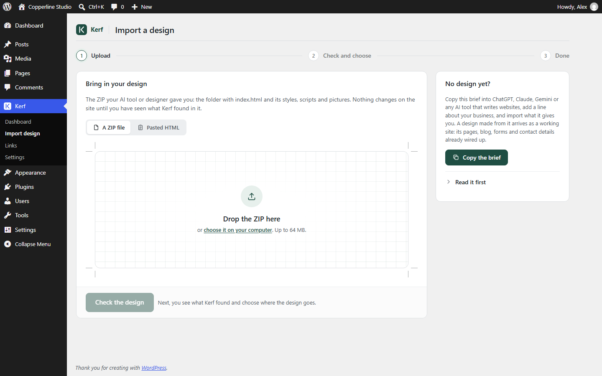
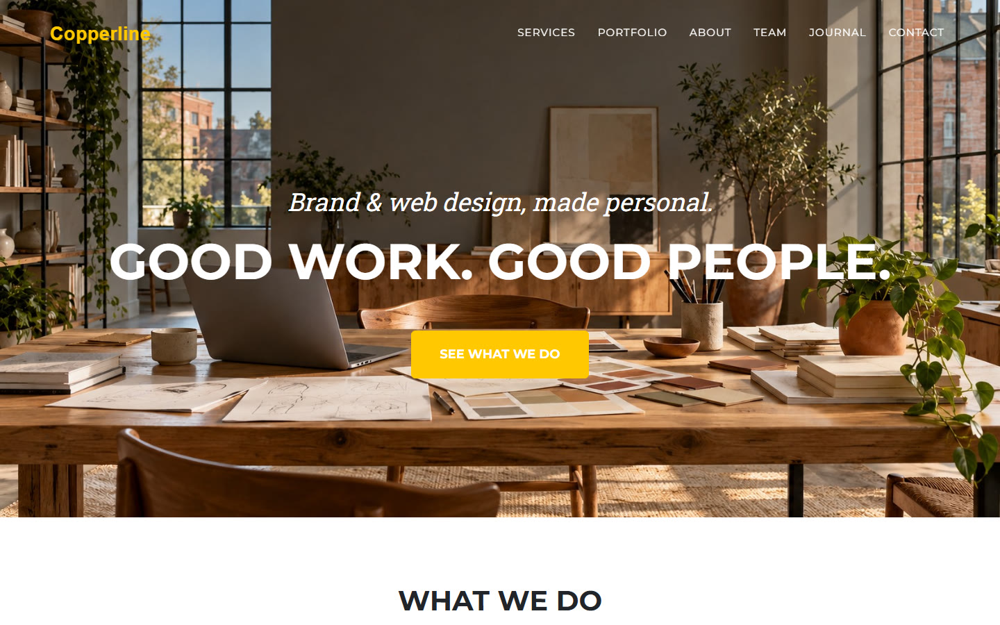
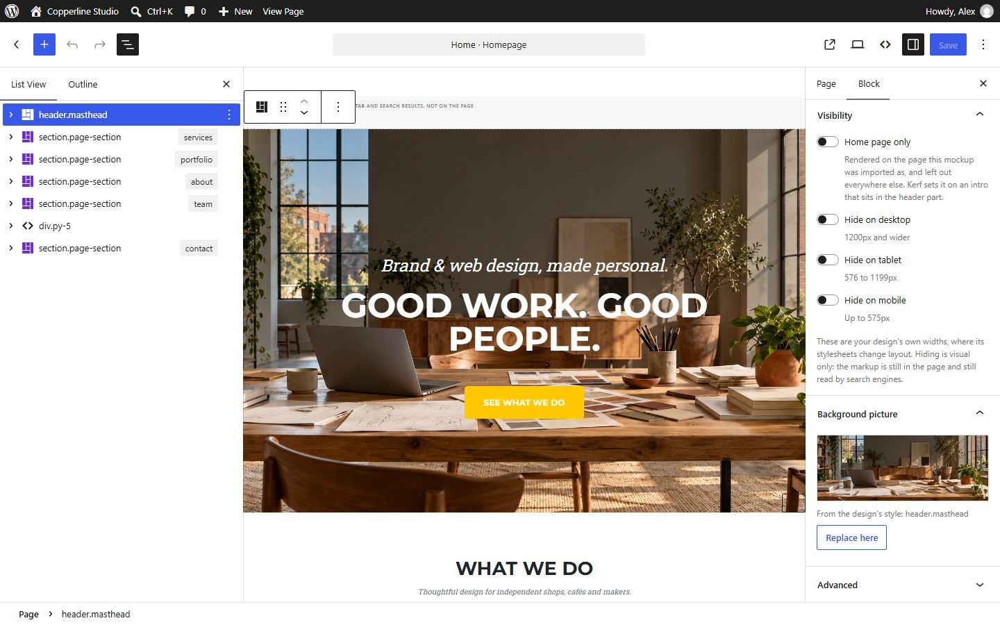
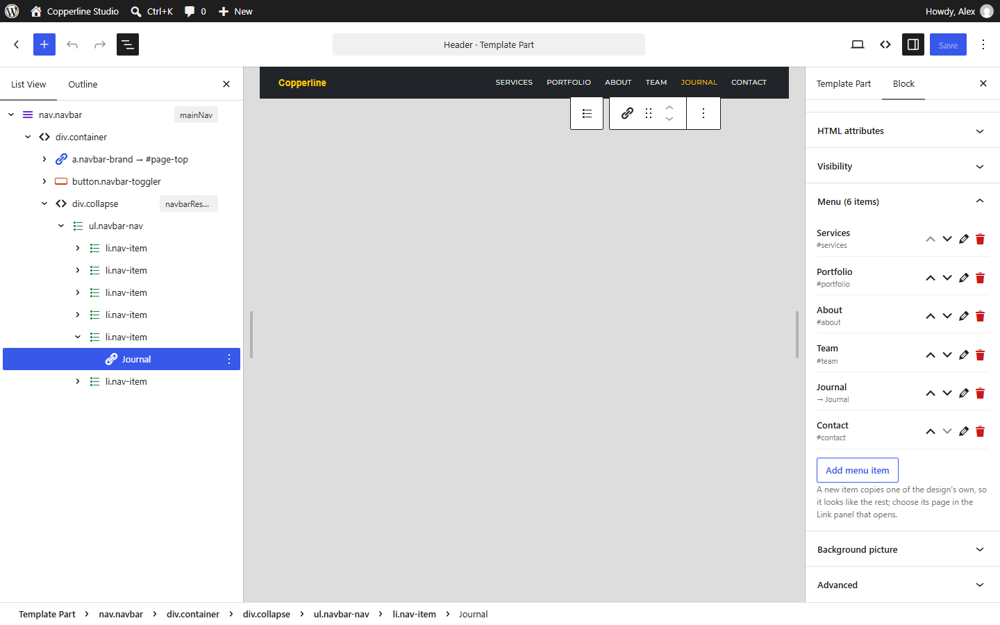
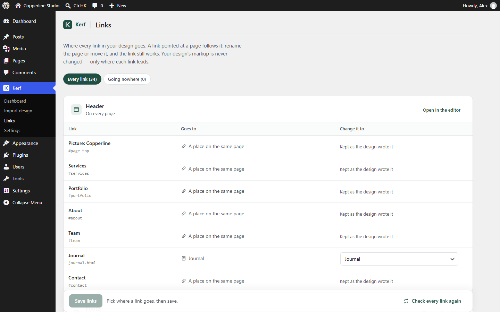

Rebuild it in a page builder
Days of dragging blocks to copy what you already have.
Kerf turns the HTML from ChatGPT, Claude, Gemini or any designer into a real WordPress site — the same design, pixel for pixel, with every word, picture and menu editable.
No sign-up. Runs in your browser.
ChatGPT Claude Gemini Google Stitch your designer
The old way
You already have the finished HTML website. Until now, putting it on WordPress meant choosing between three bad options.
Days of dragging blocks to copy what you already have.
Weeks, and a bill.
Up in minutes, but nothing you can edit.
Drop in the ZIP or paste the HTML. Kerf turns your pages, tags, classes, stylesheets and scripts into real WordPress blocks you edit in WordPress's own block editor.
How it works
Kerf is a WordPress theme with an importer inside. Open Kerf in WordPress, drop in your design, and go live.
Give Kerf the HTML website an AI tool or a designer made — as a ZIP with its pages, stylesheets, scripts and pictures, or as pasted HTML.

Kerf checks the design and shows what it found, what will and won't work, and where each page goes before anything is written. If an app needs a build step first, such as a React project from Lovable, Bolt or v0, Kerf says so upfront.

In one click, your header, footer, pages, styles, scripts and pictures are live, with a full report of everything Kerf did. You can also undo the last import anytime.

Pixel-for-pixel proof
A page rebuilt by hand looks close. Kerf's looks the same, because it is the same: the AI's page and the WordPress page, subtracted one from the other, leave nothing.


Nothing.0 of 1,296,000 pixels differ.
The black panel isn't a picture. Your browser subtracts the WordPress page from the AI's page as you look: where any pixel differs, it lights up.
Inside WordPress
Open your page in WordPress's own block editor. Your design's HTML structure stays intact while every word, picture, menu and form is yours to edit.


Edit the design's navigation as a real menu. Reorder, rename, remove or add items in the design's own style.

The design's contact form sends each message to your email, with spam protection and a form inbox inside WordPress.

Every link in the design points at your WordPress pages under Kerf → Links, so renaming a page never breaks a link.
Click any heading, paragraph, picture or background photo in the block editor to change it right on the page.
Hide any section or element on phones, tablets or computers using the design's own widths.
Testing a design? One click rolls back the last import cleanly.
No code to touch for daily edits, responsive visibility or rolling back an import.
Open Kerf in WordPress Playground — a private WordPress that runs inside your browser, with Kerf installed. Nothing to install, no account. Go to Kerf → Import design, drop in your ZIP and look at the result. Your design never leaves your computer, and the demo is gone when you close the tab.
No design at hand? Download the Copperline Studio sample above and drop it in. The first start takes about half a minute; it works best on a computer, in Chrome, Edge, Firefox or Safari.
Complete feature set
The imported design lives inside Kerf, so Kerf stays the active theme on your site — with every tool below built in.
Keep building and editing with AI directly inside WordPress, matched to your design's classes, fonts and colors.
Generate a whole site from your words and your own photos, ready to check and import.
Turn a document from Word, Google Docs or Markdown into a new page in your design.
Update a whole page or one selected section in your design, just as you ask.
Uses your own Google Gemini key. A free key works, and nothing is sent to Google until you ask.
Have a newer version from your AI tool? Apply it section by section while keeping the edits you already made in WordPress.
Every page in your ZIP is imported together and linked to each other automatically.
Blog, posts, archives, search and "not found" pages use your design's own cards, or a clean default style measured from your home page.
Your design's contact form emails every message to you, with spam protection and a form inbox inside WordPress.
Change your phone, email, address or hours once and update them everywhere at once. Swap background pictures across every page at once too.
Lock the layout while keeping words, pictures and links open — safe to hand to a client.
Every design is checked before import, the last import can be undone, and your design's code is never rewritten.
Everything is included in every plan. Plans differ only by how many sites you use Kerf on.
1 site
5 sites
Unlimited sites
Secure checkout through Freemius, in US dollars. Your download and licence key arrive by email. Kerf is a digital download, so sales are final: try it with your own design in the live demo first.
FAQ
Everything you need to know about importing your design and running it on WordPress.
Kerf is a WordPress theme with an importer inside. You give it the HTML website an AI tool or a designer made — as a ZIP, or pasted HTML — and it becomes a real WordPress site: the same tags, classes, stylesheets and scripts, turned into blocks you edit in WordPress's own block editor. Not a copy that looks close: the same page.
Kerf works with HTML from ChatGPT, Claude, Gemini, Google Stitch or any designer. Apps that need a build step first — such as React projects from Lovable, Bolt or v0 — are not supported yet. Kerf checks the ZIP and says so before importing.
Yes. Kerf keeps your design's HTML tags, classes, stylesheets and scripts intact rather than rebuilding the page with theme widgets. On our sample Copperline Studio design, 134 of 134 CSS selectors still match after the import, and the screenshot of the AI's page and the WordPress page are identical.
No. You drop in the ZIP, review Kerf's check and click once to import. After that, you edit words and pictures in place in the WordPress block editor, edit the menu as a menu, manage every page link under Kerf → Links, and receive contact form emails automatically.
Yes. Open the live demo in WordPress Playground to run a private WordPress with Kerf installed right inside your browser. There is nothing to install and no account needed. Drop in your own ZIP or test with the sample Copperline Studio ZIP.
You pay once for your plan's number of sites — 1 site on Personal, 5 sites on Freelancer, or unlimited sites on Agency. Every update and every feature in Kerf is included for life, with no recurring subscription.
Checkout is handled by Freemius. You get an email with your download and your licence key. In WordPress, upload the theme under Appearance → Themes → Add New Theme, activate it, and enter the key when Kerf asks. Updates then arrive in WordPress like any theme's, and moving to more sites later is an upgrade, not a new purchase.
No. Kerf AI is included in every plan and uses your own Google Gemini key directly between you and Google. A free key works, and nothing is sent to Google until you ask Kerf AI to build a site, make a page or change a section.
Yes. Freelancer covers 5 sites and Agency covers unlimited sites. Kerf also includes client mode — which locks the layout while keeping words, pictures and links open so it is safe to hand to a client — and lets you change business details like phone, email, address and hours once across every page.
Kerf is a WordPress theme with the importer and all editing tools inside. The imported design lives in it, so Kerf stays the active theme on that site, as with Divi or other builder themes.
Test Kerf with your own ZIP right in your browser, or explore the one-time launch plans.
No sign-up. Runs in your browser.